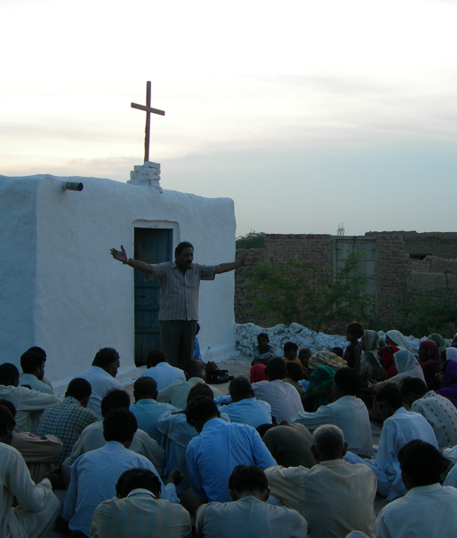

SHARING SMILES
HOPE BEHIND EVERY SMILE
HOPE BEHIND EVERY SMILE
Sharing Smiles Pakistan is committed to bringing spiritual transformation and practical hope to unreached and vulnerable communities across Pakistan.
Explore Our Mission Support The Ministry
SHARING SMILES is committed to proclaiming the Gospel of Jesus Christ and bringing spiritual transformation to those living in spiritually dark, marginalized, and difficult regions of Pakistan and beyond.
SHARING SMILES works alongside indigenous missionaries and ministry workers who faithfully serve among their own people by sharing the Word of God, praying for communities, discipling new believers, and strengthening local fellowships.
Our ultimate goal is to see souls saved and entire communities transformed through the Gospel of Jesus Christ - by Word and Deed. We believe that every person deserves the opportunity to hear the Good News and to experience the life, freedom, and redemption that comes through a relationship with Jesus Christ.
Souls Reached Through the Gospel
Churches Planted
Pastors & Ministry Team
People Served Through Compassion Projects